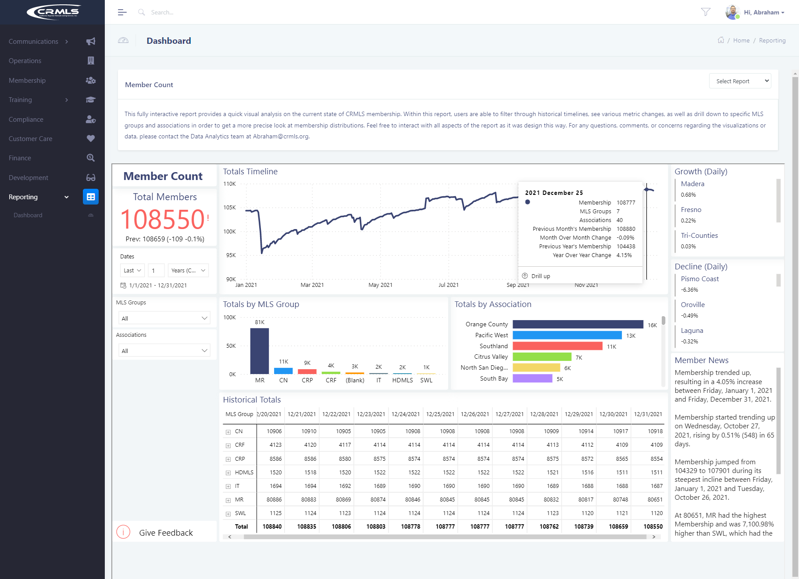
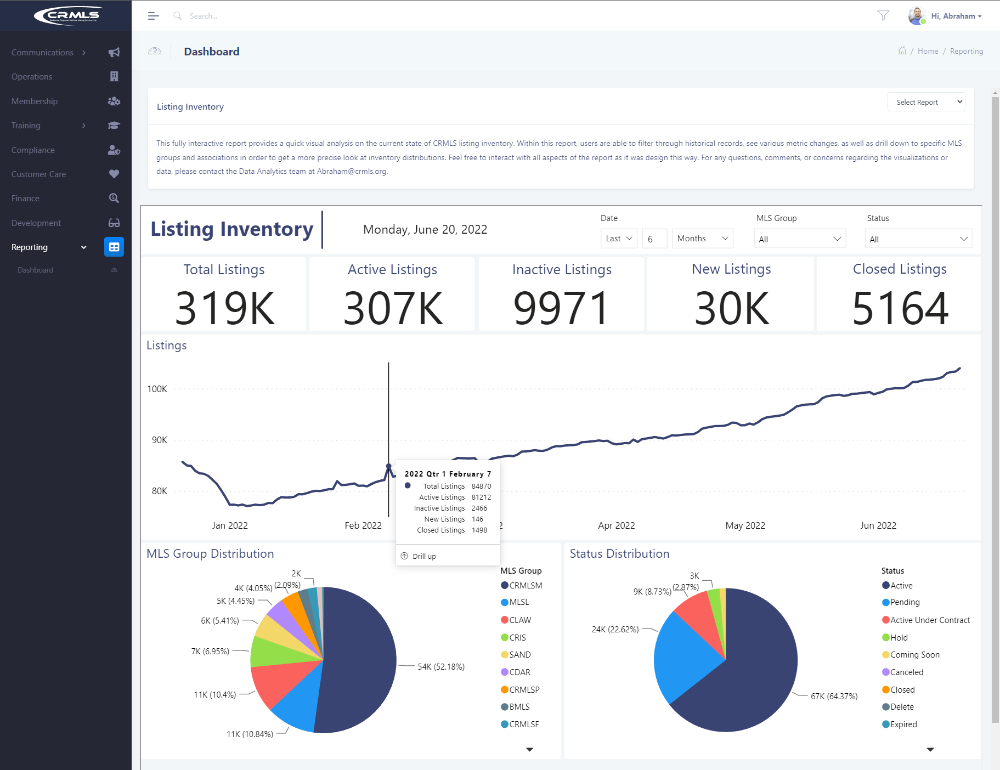
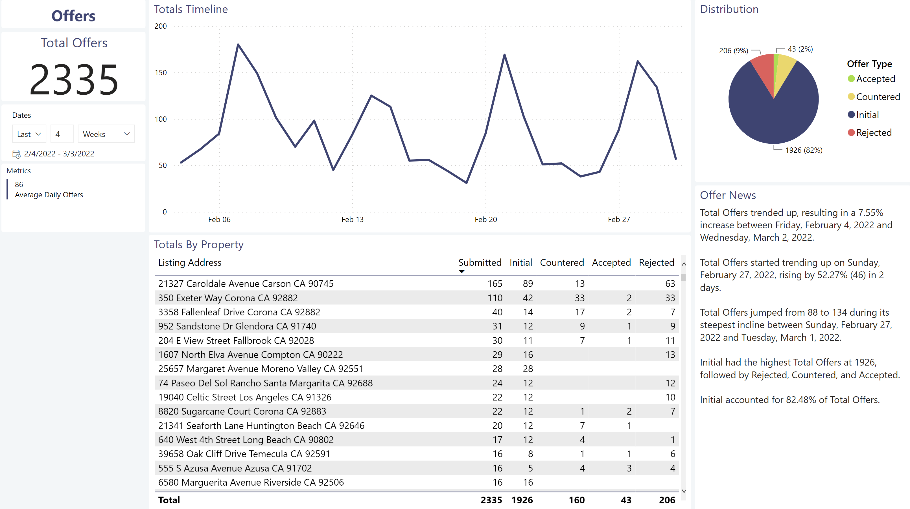
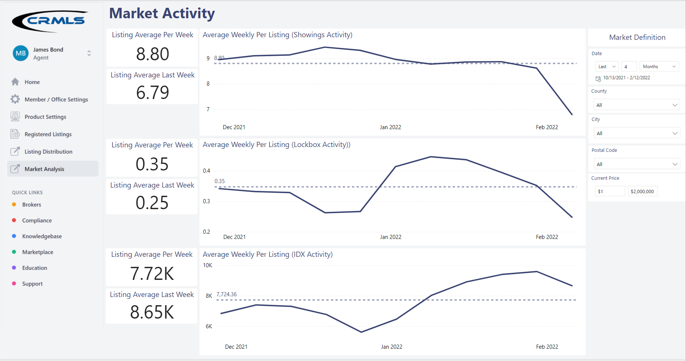
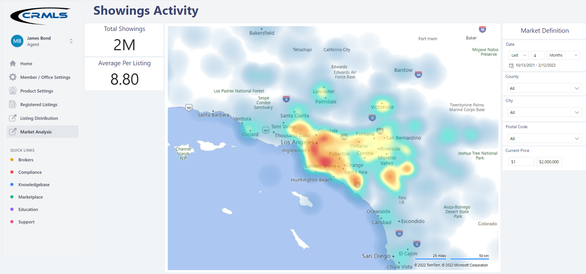

8+ Years
M.S. in Data Science
Enterprise Analytics Experience
Architecting scalable Power BI ecosystems, automated SQL and Python pipelines, and clear visual data stories for executive leadership.
Architecting Scalable Power BI Ecosystems & AI‑Augmented Analytics
Senior Data Analyst & Analytics Specialist (M.S. in Data Science) with 8+ years of experience architecting scalable Power BI ecosystems, automating SQL/Python pipelines, and translating complex datasets into clear visual stories for non‑technical executives. Daily practitioner of AI‑augmented analytics (Copilot, LLMs) to accelerate legacy report conversions, automate code reviews and documentation, and drive a 30%+ gain in enterprise reporting efficiency.
Architecting scalable Power BI ecosystems, automated SQL and Python pipelines, and clear visual data stories for executive leadership.
Spearheaded the conversion of over 100 legacy SAP Business Objects reports into modern, scalable SSRS and Power BI architectures at UnitedHealthcare.
Re‑engineered a fragmented 2‑week, 50‑sheet manual process across 15 source files into a single 5‑minute automated SQL solution for self‑service teams.
Introduced enterprise Power BI from the ground up at CRMLS, building unified dimensional data models and governance across three departments.
Earned a 5 out of 5 "Exceeds Expectations" overall manager evaluation at UnitedHealth Group while maintaining 95% on‑time weekly delivery.
Led live interactive workshops on SQL, Python, R, Power BI, and Tableau—guiding professional cohorts through end‑to‑end analytics workflows.
Career Trajectory
Proven track record of spearheading enterprise BI modernization, architecting dimensional data models, and integrating AI-augmented analytics workflows.
UnitedHealthcare (UnitedHealth Group — Employer & Individual)
ThriveDX
California Regional Multiple Listing Service (CRMLS)
California Regional Multiple Listing Service (CRMLS)
Visual Portfolio & Backend Engineering
Real‑world enterprise dashboards paired with a deep dive into the underlying Star‑Schema data models, DAX measures, and Power Query (M) pipelines powering them.

Click to Expand DashboardThe inaugural enterprise Power BI solution built at California Regional Multiple Listing Service (CRMLS) and embedded into the internal COSMOS Reporting Hub. Designed to replace manual reporting with an automated daily snapshot of active billable and non‑billable real‑estate professionals across all participating associations and MLS systems.
Architected a central FactMembers snapshot table linked via surrogate keys to conformed dimensions (DimAssociation, DimMLS, DimGroups, DimUserClass, DimMember, DimOffice) and a dedicated _Measures table.
Because daily membership is a point‑in‑time balance rather than a cumulative sum, engineered semi‑additive DAX measures using LASTDATE, DATEADD(-1, DAY), and PARALLELPERIOD with REMOVEFILTERS for accurate DoD, MoM, and YoY deltas.
Built M queries against Azure SQL (Billing.Report_MemberCounts) with RangeStart / RangeEnd datetime parameters for incremental refresh partitioning, classifying 29 Billable & Non‑Billable UserClass codes daily at 5:00 AM.
Combined custom multi‑metric hover tooltips, daily Growth/Decline leaderboards, an expandable MLS Group → Association matrix, and AI‑driven Smart Narrative (Member News) with formal schema & deployment documentation.
// Point-in-Time Active Member Count (Semi-Additive)
TotalMembers =
CALCULATE(
COUNTROWS( FactMembers ),
LASTDATE( FactMembers[DateKey (Days)] )
)
// Prior Day Snapshot & Daily % Variance
Prev1dMembers =
CALCULATE(
COUNTROWS( FactMembers ),
DATEADD( LASTDATE( FactMembers[DateKey (Days)] ), -1, DAY )
)
Prev1dPctChg =
IF(
[Prev1dMembers] = BLANK(), 0,
[TotalMembers] / [Prev1dMembers] - 1
)
// Month-over-Month & Year-over-Year Context Transition
TotalMembersLastYear =
CALCULATE(
[TotalMembers],
PARALLELPERIOD( FactMembers[DateKey].[Date], -12, MONTH ),
REMOVEFILTERS( FactMembers[DateKey (Days)] )
)
MembersYoYPctChg =
DIVIDE( [TotalMembers] - [TotalMembersLastYear], [TotalMembersLastYear] )
// FactMembers Pipeline (Sanitized Connection)
let
Source = Sql.Database("<azure-sql-host>", "ReportData"),
Billing_Report_MemberCounts =
Source{[Schema="Billing", Item="Report_MemberCounts"]}[Data],
#"Changed Type" = Table.TransformColumnTypes(
Billing_Report_MemberCounts, {{"TheDate", type datetime}}
),
#"Renamed Columns" = Table.RenameColumns(#"Changed Type", {
{"TheDate", "DateKey"},
{"MemberID", "MemberKey"},
{"UserClassId", "UserClassKey"},
{"AORID", "AssociationKey"},
{"OfficeID", "OfficeKey"},
{"MlsID", "MlsKey"},
{"GroupId", "GroupKey"}
}),
#"Filtered Rows" = Table.SelectRows(
#"Renamed Columns",
each [DateKey] > RangeStart and [DateKey] <= RangeEnd
)
in
#"Filtered Rows"

Click to Expand DashboardEnterprise real‑estate inventory and lifecycle analytics platform built for CRMLS to track the daily state, velocity, pricing, and lifespan of 319,000+ marketable listings from initial contract date through final disposition across 10+ MLS systems and 11 listing statuses.
Modeled a daily‑grain periodic snapshot fact table (FactListingDays) linked via surrogate keys to 10 conformed dimensions: DimAssociation, DimListAgent, DimCoListAgent, DimListOffice, DimCoListOffice, DimLocation, DimMLS, DimPropertyType, DimPropertySubType, and DimStatus.
Engineered daily 3:00 AM ETL rules separating continuous daily snapshots for Active Lifespan statuses (Active, Pending, Under Contract, Hold) from event‑timestamped Inactive Lifespan captures (StatusChangeTimestamp = FactDate), plus historical active‑day backfilling from ListingContractDate.
Built DAX measures for Market Change Rate, Price Gap (close‑to‑list differential via AVERAGEX), median/average DaysOnMarket & CurrentPrice, DOM aging buckets (<30, 30–60, >60 days), and rolling 1d / 7d / 30d unique listing deltas.
Configured a 5‑level location drill‑down hierarchy (Country → State → County → City → Postal Code), multi‑metric quarter/day timeline tooltips, and authored 11 iterative versions of enterprise schema & business‑rule documentation.
// Zero-Coalesced Distinct Listing Count (Prevents Blank Timeline Artifacts)
Total Listings =
IF(
ISBLANK( DISTINCTCOUNTNOBLANK( FactListingDays[ListingId] ) ),
0,
DISTINCTCOUNTNOBLANK( FactListingDays[ListingId] )
)
// Rolling 1d / 7d / 30d Unique Listing Snapshots
Prev30dUniqueCt =
CALCULATE(
DISTINCTCOUNT( FactListingDays[ListingId] ),
DATEADD( LASTDATE( FactListingDays[DateKey (Days)] ), -30, DAY )
)
// Active vs. New Listing Lifecycle Segmentation & Market Velocity
Active Listings =
CALCULATE(
COUNTROWS( DISTINCT( Listing_ListingDates[ListingKeyNumeric] ) ),
Listing_ListingDates[IsOnMarket] = TRUE()
)
New Listings =
CALCULATE(
COUNTROWS( DISTINCT( Listing_ListingDates[ListingKeyNumeric] ) ),
Listing_ListingDates[DaysOnMarket] = 1
)
Market Change Rate =
CALCULATE( ( [New Listings] - [Closed Listings] ) / [Active Listings] )
// Close-to-List Price Gap Differential
Price Gap =
AVERAGEX(
FILTER(
Listing_ListingDates,
Listing_ListingDates[FactDate] = Listing_ListingDates[CloseDate]
),
DIVIDE(
Listing_ListingDates[ClosePrice] - Listing_ListingDates[ListPrice],
Listing_ListingDates[ClosePrice]
)
)
Fact Table: FactListingDays (Daily Periodic Snapshot, 3:00 AM ETL) ├── FactKey (PK) ├── ListingId (Natural Key) ├── DateKey (Prior Day Stamp) ├── ListingContractDate ├── StatusChangeTimestamp ├── CloseDate ├── CurrentPrice / ListPrice ├── OriginalListPrice / ClosePrice ├── DaysOnMarket (Init = 1) ├── DaysInStatus └── Latitude / Longitude / UPI 10 Conformed Dimension Tables (Surrogate Key Joins): ├── DimAssociation (AssociationKey → AssociationName) ├── DimMLS (MLSKey → CRMLSM, CLAW, CRIS, CDAR, SAND...) ├── DimStatus (StatusKey → Active, Pending, Under Contract, Closed...) ├── DimPropertyType (PropertyTypeKey→ Residential, Lease, Income, Land...) ├── DimPropertySubType (SubTypeKey → Single Family Residence, Cabin...) ├── DimLocation (LocationKey → Country ▸ State ▸ County ▸ City ▸ Zip) ├── DimListAgent (ListAgentKey → AgentMlsId, Name, StateLicense) ├── DimCoListAgent (CoListAgentKey → CoAgentMlsId, Name, StateLicense) ├── DimListOffice (ListOfficeKey → OfficeMlsId, Name, StateLicense) └── DimCoListOffice (CoListOfficeKey→ CoOfficeMlsId, Name, StateLicense)

Click to Expand DashboardBuilt for CRMLS to monitor real‑estate offer volume and competitive bidding activity flowing from Glide—an external offer management and transaction platform. Transformed raw event‑gateway telemetry into property‑level offer breakdowns (Initial, Countered, Accepted, Rejected), daily velocity trends, and automated executive narratives.
Modeled FactGlideEvents (capturing offer, disclosure, signature, financing, and contingency attributes across 4 agent roles) joined to 9 conformed dimensions: DimEventName, DimMessageType, DimTopic, DimOfferDeliveryMethod, DimActionSourceSide, DimCloseOfEscrowType, DimLoanType, DimExpirationTimePeriod, and DimDate.
External Glide payloads often arrived with ListingId = "unknown" or prefixed with "CRMLS-". Engineered prefix stripping and built a composite AddressKey (Street + Unit + City + State + Zip) to accurately group offers by property even when MLS IDs were missing.
Separated multi‑topic event payloads (Offer, Disclosures, Signatures), normalized camelCase event enums across role1–role4 in Power Query (M), converted timestamps to PST, and filtered out sandbox/test traffic (isTest, X%, and crmlstestuser IDs).
Built compound CALCULATE measures filtering across TopicKey = "offer", EventNameKey = "offerSubmitted", and MessageTypeKey (Initial, Countered, Accepted, Rejected), paired with AVERAGEX(VALUES(Date), [Total Offers]) for daily velocity.
// Total Submitted Offers & Distinct Properties Resolved via AddressKey
Total Offers =
CALCULATE(
COUNT( FactGlideEvents[FactKey] ),
FactGlideEvents[TopicKey] = "offer",
FactGlideEvents[EventNameKey] = "offerSubmitted"
)
Properties (Offers) =
CALCULATE(
DISTINCTCOUNTNOBLANK( FactGlideEvents[AddressKey] ),
FactGlideEvents[TopicKey] = "offer",
FactGlideEvents[EventNameKey] = "offerSubmitted"
)
// Lifecycle Stage Breakdown (Initial / Countered / Accepted / Rejected)
Accepted Offers =
CALCULATE(
COUNT( FactGlideEvents[FactKey] ),
FactGlideEvents[TopicKey] = "offer",
FactGlideEvents[EventNameKey] = "offerSubmitted",
FactGlideEvents[MessageTypeKey] = "accepted"
)
// Daily Offer Velocity Across Active Event Dates
Average Daily Offers =
AVERAGEX(
VALUES( FactGlideEvents[DateKey].[Date] ),
[Total Offers]
)
// Unmatched MLS ID Audit Metric
Total Unknown Offers =
CALCULATE(
COUNT( FactGlideEvents[FactKey] ),
FactGlideEvents[TopicKey] = "offer",
FactGlideEvents[EventNameKey] = "offerSubmitted",
FactGlideEvents[ListingId] = "unknown"
)
// PBI_EventMessage Pipeline (Sanitized Connection)
let
Source = Sql.Database("<azure-eventgateway-host>", "eventgateway"),
dbo_PBI_EventMessage =
Source{[Schema="dbo", Item="PBI_EventMessage"]}[Data],
#"Filtered (EventTime)" = Table.SelectRows(
dbo_PBI_EventMessage,
each [EventTime] > RangeStart and [EventTime] <= RangeEnd
),
// Normalize camelCase JSON Event Enums for Executive Reporting
#"Replaced (accepted)" = Table.ReplaceValue(
#"Filtered (EventTime)", "accepted", "Accepted",
Replacer.ReplaceValue, {"MessageType"}
),
#"Replaced (countered)" = Table.ReplaceValue(
#"Replaced (accepted)", "countered", "Countered",
Replacer.ReplaceValue, {"MessageType"}
),
#"Replaced (initialOffer)" = Table.ReplaceValue(
#"Replaced (countered)", "initialOffer", "Initial",
Replacer.ReplaceValue, {"MessageType"}
),
#"Replaced (rejected)" = Table.ReplaceValue(
#"Replaced (initialOffer)", "rejected", "Rejected",
Replacer.ReplaceValue, {"MessageType"}
)
in
#"Replaced (rejected)"

Expand Overview
Expand Heat MapArchitected an executive Proof‑of‑Concept unifying four distinct real‑estate demand signals—Scheduled Showings, Physical Lockbox Openings, IDX Consumer Search Views, and Glide Property Offers—into a single application‑style Power BI experience with custom side‑panel navigation and interactive Southern California geospatial heat maps.
Bridged two separate Azure SQL databases (ReportData and eventgateway) across a shared DimDate calendar, unifying FactListingDays (connected to 10 conformed property/office dimensions), GlideEvents (offers), and Dim.LockboxOpenings (physical lockbox telemetry).
Raw activity counts skew toward high‑volume counties. Engineered normalized DAX ratios dividing [Total Showings], [Total Lockbox Showings], and [Total IDX Views] by DISTINCTCOUNTNOBLANK(ListingKey) to reveal true demand per active listing.
Built synchronized week‑over‑week velocity measures (Prev 7d Total Showings, 7d Showings Change, 7d Lockbox Change, 7d IDX Views Change, and 7d Offers Change) alongside Net Inventory Flow ([New Listings] - [Closed Listings]).
Designed a collapsible slide‑out navigation drawer using Power BI bookmark state groups, paired with right‑hand Market Definition slicers (County, City, Postal Code, Price Tier) driving real‑time geospatial density heat maps.
// Normalized Demand Ratios Across Unique Active Listings
TotalUniqueCt =
DISTINCTCOUNTNOBLANK( FactListingDays[ListingKey] )
Showings Per Unique Listings =
DIVIDE( [Total Showings], [TotalUniqueCt] )
Average Showings Per Unique Listings =
CALCULATE( _Measures[Showings Per Unique Listings] )
/ COUNT( DimDate[Date (Week)] )
Lockbox Showings Per Unique Listings =
DIVIDE( [Total Lockbox Showings], [TotalUniqueCt] )
IDX Views Per Unique Listings =
DIVIDE( [Total IDX Views], [TotalUniqueCt] )
// Net Inventory Absorption & Rolling 7-Day Momentum
Difference =
_Measures[New Listings] - [Closed Listings]
Prev 7d Total Showings =
CALCULATE(
_Measures[Total Showings],
DATEADD( DimDate[DateKey], -7, DAY )
)
7d Showings Change =
_Measures[Total Showings] - _Measures[Prev 7d Total Showings]
// Unified Across Shared Calendar: DimDate = CALENDAR(MIN, MAX)
[Azure SQL: <azure-sql-host> / ReportData]
├── FactListingDays (Showings, IDX Views, DaysOnMarket, Price)
│ ├──> DimLocation (County, City, PostalCode, Lat/Long)
│ ├──> DimStatus / DimPropertyType / DimPropertySubType
│ └──> DimListOffice / DimListAgent / DimAssociation / DimMLS
└── Dim.LockboxOpenings (Physical Lockbox Access Telemetry)
└──> DimDate[Date]
[Azure SQL: <azure-eventgateway-host> / eventgateway]
└── dbo.GlideEvents (Real-Time Offer Submissions)
└──> DimDate[Date] (via EventDate)
Outside of enterprise BI, I build utility scripts, automate local environments, and contribute to open‑source tooling on github.com/abrahamhuitron.
PowerShell automation utility built for low‑latency game streaming setups (Sunshine / Apollo & Moonlight). Automatically snapshots and closes resource‑heavy background applications, elevates target process CPU priority (High/Realtime) during sessions, and cleanly restores closed applications afterward.
Source repository for this custom analytics‑inspired web resume and Power BI case‑study portfolio, built with semantic HTML5, responsive CSS custom properties, interactive JavaScript filtering, and print‑ready PDF media stylesheets.
Active contributor to community troubleshooting, bug reports, and configuration workflows across open‑source projects including moonlight-stream/moonlight-qt, NonSteamLaunchersDecky, and Microsoft PowerToys.
Technical Stack
Click any skill badge below to highlight where it was applied across my professional experience and project case studies above.
Enterprise Dashboards, DAX & BI Governance
AI-Augmented Workflows & Statistical Modeling
Pipelines, Dimensional Modeling & Development
Cross‑Functional Collaboration & Instruction
Verified Track Record
Verbatim manager evaluations from consecutive annual performance reviews at UnitedHealth Group, demonstrating year‑over‑year growth culminating in a 5 / 5 "Exceeds Expectations" rating.
“Abraham consistently demonstrates a high level of professionalism and collaboration. He takes initiative to ask thoughtful, clarifying questions to ensure accuracy and alignment with departmental needs. His ability to understand business processes and the meaning behind data enables him to deliver solutions that exceed expectations. … Stakeholders describe him as collaborative, hardworking, and efficient, consistently producing high‑quality work within tight timelines.”
Evaluated Key Deliverables (5/5 Goal Ratings)
“In the past year, Abraham has become the primary developer for Financial Protection reporting. … He is innovative in developing solutions that meet and exceed users’ expectations. … His technical contributions have had a direct impact on the business, particularly in areas that enhance data analysis, improve customer experience, and support business‑critical decisions. His positive attitude, professional demeanor, and proactive communication make him a valuable team member and an ideal candidate for promotion.”
Evaluated Key Deliverables
“His dedication, attention to detail, and collaborative approach have consistently yielded outstanding results. Abraham’s willingness to thoroughly review requests and ask insightful questions not only demonstrates his commitment to understanding business users’ needs but also ensures the accuracy and relevance of the reports he produces. … Despite being relatively new to the team, he quickly grasped the intricacies of report writing and database management.”
Evaluated Key Deliverables
Academic Foundation
Graduate and undergraduate training in Data Science, Information Systems, and Computer Science at CSUF.
California State University, Fullerton (CSUF)
California State University, Fullerton (CSUF)